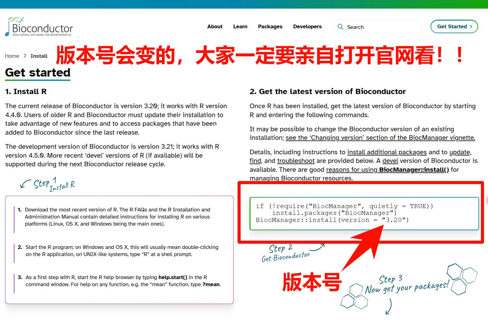

install.packages("ggplot2")3 R包介绍和安装
别问我怎么修改R包的默认安装位置，这不是初学者该学的东西，把你的精力用在刀刃上。但是我在合集最后会介绍如何修改。
R语言学到后面其实就是学习各种R包和函数的使用。
3.1 什么是R包？
R包是别人整理好的工具包，内置各种函数以及帮助文档等信息，可以用来实现特定的功能。
R包相当于手机里的APP，不同的APP有不同的功能，不同的R包也有不同的功能，比如：有些R包是专门用来画热图的（pheatmap、complexheatmap等），有些R包是专门用来做生存分析（survival、survminer等）的，等。
R语言在安装时会有很多自带的R包（包括base、datasets、utils、grDevices、graphics、stats、methods），这些R包不需要额外安装，都是出场自带的，安装好R语言就能用了。类似于刚买的新手机有很多内置APP，这些内置APP是不用自己额外安装的。
3.2 R包安装
R包就相当于手机里的各种APP，自带的APP很明显是无法满足日常使用的，所以我们需要自己安装其他APP。同理，R自带的R包也是无法满足我们要求的，所以我们也要自己安装其他R包。
安装R包就类似于给手机安装APP，安装方式有多种。比如：
- 小米手机可以从小米应用商店安装APP，也可以从酷安安装APP，还可以从Google play安装，还可以从官网下载apk文件到本地安装，等；
- 苹果手机可以从App Store安装，还可以通过巨魔商店安装，也可以本地安装。
R包安装也有多种方法，不同的R包是存放在不同的应用商店的。比较常见的R包安装主要是4种：
- 从
CRAN安装， - 从
bioconductor安装， - 从
github安装， - 下载安装包
本地安装。
随着学习的深入你还会遇见其他安装方法，我列举的这几种是最常见的。
R语言是老外发明的东西，我们要访问老外的东西，由于众所周知的原因，是很困难的。不只是R，其他的东西比如Python、Linux等，都是这样。
所以在安装R包时，我们一定要先修改镜像（mirror）（或者你可以使用魔法，就像你使用Google play需要魔法一样，如果你在国外的话自然是不需要这一步的）。镜像可以简单理解为中国人为了方便自己下载安装，把国外的东西完整复制了一份放到国内，而且会随着国外的更新而更新。使用镜像的好处的不需要魔法我们也可以流畅快速地下载安装R包。
一个R包只需要安装一次即可重复使用，R包也可以更新、卸载、重装，这个道理和手机APP简直是一模一样。
以下是4种R包安装方法的详细介绍，这部分我在哔哩哔哩也有相应的视频介绍，点击即可观看：R语言零基础入门
3.2.1 从CRAN安装
CRAN是最主要的存储R包的仓库，大多数R包都是存储在这里的。
要从CRAN安装，我们首先要修改镜像（如果你人在国外是不需要这一步的）。这个过程在安装好Rstudio之后非常简单，依次点击：Tools-Global Options：
然后按照下图所示依次点击，在列出的镜像中任选一个中国的镜像即可（比如我选择了上海交通大学的镜像，理论上改好镜像之后下载会飞快并且不会出现下载不完全的情况，如果发生了，可以换镜像试试），选好之后点击OK即可。这样就修改好镜像了，下面就可以畅快的安装R包了。这种修改镜像只需要1次修改即可，以后从CRAN安装R包都会默认使用你选择的这个镜像，不用每次都改。
比如我们现在想要安装ggplot2这个R包，使用以下代码即可：
这也是默认的安装CRAN中的R包的方式，即：使用install.packages("xxx")。
注释
安装R包时一定要注意，R包的名字不能拼错，大小写也不能错，而且必须加引号，双引号或者单引号都可以，但是必须是英文状态下的！加载R包不需要引号。
3.2.2 从bioconductor安装
医学生/医生学习R语言有相当一部分人是想做生信分析的，绝大多数做生信分析的R包都不在CRAN中，而是存储在bioconductor中，这个网站是专门存储生物信息学分析所用R包的。
这个仓库也是老外建立维护的，所以要安装这里的R包，自然也是先要更改镜像的。
从bioconductor的官方镜像列表中可知，目前中国镜像有以下4个，分别是清华大学的镜像、南京大学的镜像、中国科学技术大学的镜像、西湖大学的镜像，如下所示：

每次在安装bioconductor的R包之前，都要先运行以下代码更换镜像，任选一个运行即可，目前我推荐你使用西湖大学的镜像，原因请看bioconductor有新的镜像选择啦：
# 使用清华大学的镜像
options(BioC_mirror="https://mirrors.tuna.tsinghua.edu.cn/bioconductor")
# 使用南京大学的镜像
options(BioC_mirror="https://mirrors.nju.edu.cn/bioconductor/")
# 使用中国科学技术大学的镜像
options(BioC_mirror="https://mirrors.ustc.edu.cn/bioc/")
# 使用西湖大学的镜像
options(BioC_mirror="https://mirrors.westlake.edu.cn/bioconductor")
提示
bioconductor的镜像不像CRAN那样只需要改一次，每次在安装bioconductor的包之前，都需要运行一下修改镜像的代码。但是随着学习的深入，你以后也可以通过修改.Rporfile文件实现1次修改，永久使用！建议初学者就别搞这些花里胡哨的操作了，还是每次都运行一下吧。
运行完以上代码更改好镜像之后，我们还需要先安装一个bioconductor的R包管理器，才能安装bioconductor中的R包，使用以下代码安装bioconductor的R包管理器，也就是BiocManager包。
由于bioconductor更新频繁，所以版本号会经常变，大家一定要亲自打开官方网站查看当前版本，使用官方网址给出的代码！不要单纯的复制粘贴！
官方网址：安装bioconductor的官方网址

# 安装BiocManager包
# 注意不要搞错版本，否则小白搞不定！！
if (!require("BiocManager", quietly = TRUE))
install.packages("BiocManager")
BiocManager::install(version = "3.18") # 这个版本会变化的，根据官网来！！安装好这个包管理器之后，就可以安装bioconductor的R包了。以后再安装bioconductor的R包时，也不需要再重新安装这个包管理器了。
注意
R语言每年会进行1次版本大更新，时间大约是每年的4月份，bioconductor每年会进行两次更新，时间大约是每年的4月份和10月份。bioconductor的版本和R的版本是有对应关系的。对于初学者来说，不建议跨版本使用。
通常来说R语言安装好之后不需要频繁的更新，一般不会影响使用，但是如果你一定要更新的话，建议每年的5月份进行更新，刚好是R和bioconductor同时更新的时间，此时的版本刚好匹配，初学者安装R包出错的概率要小一些。
比如我们要安装一个做差异分析的R包：limma，就可以使用以下代码：
# 每次都要先改镜像，建议使用西湖大学的镜像
options(BioC_mirror="https://mirrors.westlake.edu.cn/bioconductor")
# 改完镜像再安装
BiocManager::install("limma")这样limma包就安装好了。以后你要安装bioconductor中的R包，就先改镜像，然后使用BiocManager::install("xxx")即可。
3.2.3 从github安装
有一些R包既不在CRAN，也不在bioconductor，而是在github中。要安装github中的R包，建议借助devtools或者remotes包实现。
注意
remotes可以认为是devtools的精简版，其实区别不大，所以我个人比较推荐使用devtools。
首先从CRAN安装devtools包：
# 没改镜像的记得先改镜像
install.packages("devtools")安装好之后再使用install_github()安装github中的R包，比如，我现在想要安装easyTCGA这个包，使用以下代码即可：
library(devtools)
install_github("ayueme/easyTCGA")其中easyTCGA是R包的名字，前面的ayueme是仓库所有者的名字。千万不要写错，写错必然报错！
一般你找到这个R包都会有介绍如何安装，直接复制粘贴即可，github左上角也会有名字的，照抄就行，比如：
但是国内访问github是有困难的，如果你的网络不行，那么这个方式大概率你会失败。有的时候即使你能打开github的网页，也不见得你用以上方法就能安装成功。那么这时你可以尝试下面介绍的本地安装。
注意
遇到以下报错，一般都是由于网络问题导致的：
cannot open url: xxxxtimeout xxxx- download from
https://api.github.com/xxxxfailed
你能上谷歌或者YouTube，不代表你能从github（或者GDC TCGA的官网等）下载东西。
3.2.4 本地安装
本地安装R包就和本地安装手机APP没有任何区别，把安装包下载下来，然后安装就好了。
还是以上面的easyTCGA为例，如果你要本地安装，首先你得下载这个R包到你的电脑上，所以你得找到这个R包的下载地址才行！
在github上面的R包的下载地址都是有规律的，通常都是：https://github.com/xxxx/R包名字
比如：easyTCGA包的下载地址是：https://github.com/ayueme/easyTCGA
打开网址后，按照顺序依次点击：Code-Download ZIP，即可把R包下载到本地了（对你的网络有要求，因为这个网站也是老外的！）。
我下载的R包存放在我的E盘-R-R包，这个文件夹里面，所以存放路径是：E:/R/R包/easyTCGA-main.zip
此时安装包已经下载好了，我们可以借助devtools里面的install_local()函数安装本地R包：
library(devtools)
# 注意你的R包存放路径不要写错！写错必报错！
install_local("E:/R/R包/easyTCGA-main.zip")本地安装需要注意R包依赖的问题。R包依赖的意思是有些R包是建立在其他R包的基础上的，所以你在安装时需要注意先后顺序，必须先安装某个包然后才能安装另一个包，否则就会出现安装失败。比如easyTCGA就是建立在很多R包之上，所以如果你没提前安装easyTCGA的依赖包，那么在进行本地安装时也会报错。
这是本地安装最大的弊端，install.packages()和BiocManager::install()在安装R包时会自动帮你先安装依赖包，所以不会有问题。
easyTCGA有以下依赖包，需要你先安装好下面的依赖包，才能安装easyTCGA：
# 安装bioconductor上面的依赖R包
# 首先要改镜像
options(BioC_mirror="https://mirrors.westlake.edu.cn/bioconductor")
if(!require("BiocManager")) install.packages("BiocManager")
if(!require("TCGAbiolinks")) BiocManager::install("TCGAbiolinks")
if(!require("SummarizedExperiment")) BiocManager::install("SummarizedExperiment")
if(!require("DESeq2")) BiocManager::install("DESeq2")
if(!require("edgeR")) BiocManager::install("edgeR")
if(!require("limma")) BiocManager::install("limma")
# 安装cran上面的依赖R包
if(!require("survival")) install.packages("survival")
if(!require("broom")) install.packages("broom")
if(!require("devtools")) install.packages("devtools")
if(!require("reshape2")) install.packages("reshape2")
if(!require("data.table")) install.packages("data.table")
if(!require("ggplot2")) install.packages("ggplot2")
if(!require("ggpubr")) install.packages("ggpubr")以上安装R包的代码我加了一个if判断语句，意思是：如果我已经安装了这个R包，就不要重复安装了，如果没安装，就帮我安装。
3.3 其他安装方法
除了以上介绍的安装方法外，还有一些R包的安装方法比较特殊，这里给大家简单介绍下，就以mlr3proba为例。这个R包由于一些原因不在CRAN中，如果你要安装Github版本，可以按照以下代码安装：
remotes::install_github("mlr-org/mlr3proba")但是如果你要使用install.packages()函数安装，需要按照如下方式进行：
install.packages("mlr3proba", repos = "https://mlr-org.r-universe.dev")3.4 终极大法
直接百度、谷歌、必应。
比如一个叫linkET的包，你不知道怎么安装，直接搜索啊：
3.5 R包常见报错
1. 载入了名字空间‘rlang’ 1.0.1，但需要的是>= 1.0.2
`rlang`包的版本太低了，你需要先安装1.0.2以上版本的`rlang`，记得直接关闭Rstudio，重新打开再安装
2. 不存在叫‘latticeExtra’这个名字的程辑包
首先看看自己的拼写错了吗？标点符号有错误吗？没问题就安装这个`latticeExtra`包即可
3. 程序包安装入‘C:/Users/xxx/AppData/Local/R/win-library/4.2’(因为‘lib’没有被指定)
Warning in install.packages : package ‘limma’ is not available for this version of R
A version of this package for your version of R might be available elsewhere
`limma`包在bioconductor上，不在CRAN上，要通过`BiocManager`安装。
4. 安装程序包‘mapproj’时退出狀態的值不是0
大概率依赖包没装好。
5. library(lsmeans) Error: 找不到‘lsmeans’所需要的程辑包‘emmeans’
缺什么就安装什么。找不到`emmeans`就安装`emmeans`。
6. 用devtools从github安装包，无论是直接安装还是本地安装，都报timeout错误
github在国外，访问国外的网站你得科学上网，你网络行吗？你能访问谷歌不代表你能从github下载东西。
7. 安装r包时出现：update all/some/none?
问你要不要：更新所有R包/部分R包/不更新？输入n就行了，表示不更新。
8. library(tidyverse)出现一大推字
── Attaching core tidyverse packages ────── tidyverse 2.0.0 ──
✔ dplyr 1.1.2 ✔ readr 2.1.4
✔ forcats 1.0.0 ✔ stringr 1.5.0
✔ ggplot2 3.4.2 ✔ tibble 3.2.1
✔ lubridate 1.9.2 ✔ tidyr 1.3.0
✔ purrr 1.0.1
── Conflicts ──────────────────────── tidyverse_conflicts() ──
✖ dplyr::filter() masks stats::filter()
✖ dplyr::lag() masks stats::lag()
ℹ Use the conflicted package to force all conflicts to become errors
正常的，不用管，只要没有`Error`就没事。